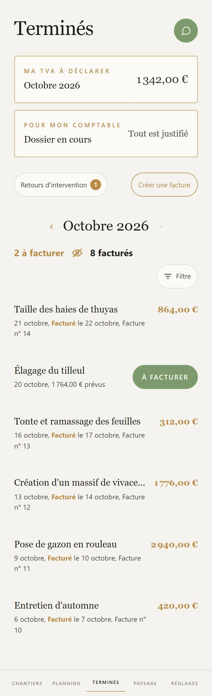

Proposé
Aujourd'hui

Ce qui change
- Ma TVA sur une plage dorée, Pour mon comptable sur une plage verte, côte à côte.
- Chaque chantier porte son jour en grand à gauche, dans un carré doré quand la facture est partie, vert plein quand elle attend.
- Non payées, quand elle existe, s'écrit en rouge sous les deux boutons.
Ce qui revient comme dans l'appli
- Les couleurs : l'or de l'appli pour tout ce qui est doré, titres en or espacé, montants en or, pastille or, À facturer en vert plein, Créer une facture au contour or.
- Sous le mois et ses flèches : 2 à facturer, l'œil, 8 facturés, puis le Filtre, et les chantiers du mois mêlés.
- L'œil ne montre que ce qui attend sa facture, tous mois confondus.
- Toucher un chantier à facturer ouvre la facture ; toucher une facture partie ouvre ses trois choix.